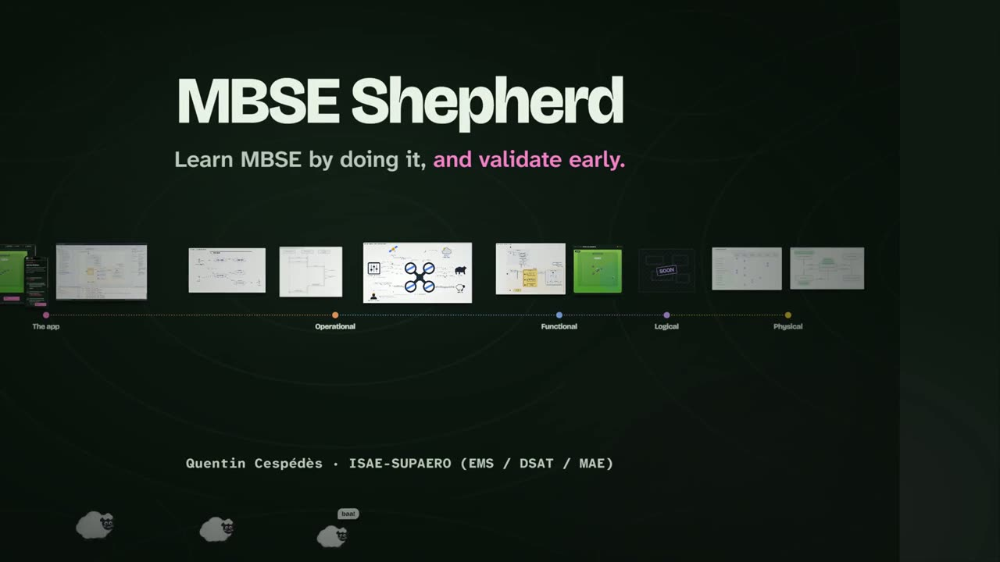

MBSE Shepherd · 1/3 · pédagogie
J’ai viré le polycopié Word : un TP MBSE façon Brilliant
Un guide web sur le téléphone de l’étudiant, branché en direct sur Cameo, des concepts SysML en petites scènes animées, et une simulation où l’on voit son drone voler… ou rester au sol.
Vous connaissez la scène. Deux heures de slides sur la notation SysML : blocs, ports, interfaces, flow properties, machines d’états. Puis une salle de TP, un portable de 15 pouces, Cameo ouvert sur un modèle de plusieurs centaines d’éléments, et un énoncé Word. Le nôtre faisait 9 500 mots et 38 captures d’écran.
Le résultat aussi, vous le connaissez. Les étudiants enchaînent les clics sans voir la démarche système. Au premier élément introuvable dans l’arbre du modèle, ils décrochent. Et du cours du matin, il ne reste pas grand-chose l’après-midi.
Mon objectif était simple : un TP plus authentique, plus fun, moins prise de tête, où les étudiants apprennent vraiment la démarche MBSE. Première décision : virer le document.

- L’humain apprend un TP vivant, connecté à l’outil (cet article)
- L’humain conçoit sans souffrir la couche logique : démarche, automatisation, simulation
- L’IA prend le relais du labeur la même méthode, les mêmes outils, le même juge
1 « J’ai viré le document »
Le premier problème est tout bête : il est ergonomique. Un énoncé décrit des clics. Pour le suivre, on fait Alt+Tab entre le Word et Cameo, on retrouve la ligne où on en était, on revient, on cherche le package. La remarque que j’entendais à chaque séance : « Ce serait bien d’avoir deux écrans. »
Or chaque étudiant a déjà un deuxième écran dans sa poche : son téléphone. Le polycopié est donc devenu une application web, sans installation, qui tourne sur le PC, sur le téléphone, ou sur les deux à la fois. Les deux restent synchronisés : une étape cochée ou une réponse saisie sur l’un apparaît sur l’autre.
C.1 – Create the transitions
- Left-click on the “UnConfigured” state and click the Transition button on its smart manipulator toolbar and drag it to ”Configured” state.
- Select the “FlightPlan Check Failed” signal and drag it to the transition between the “Configured” and ‘Unconfigured” states
- Select the shape of the “Configured” state and click the Transition button on its smart manipulator toolbar and right click on ”Ready for Mission state”.
- Select the “Ready for mission” signal and drag it to the transition between the “Configured” and “Ready for Mission” states
Des chemins à recopier, des clics à imaginer, des captures à déchiffrer. Extrait réel de l’énoncé.
La même étape : une case à cocher, la vidéo du geste en boucle, et des liens directs vers les éléments du modèle. Faites défiler, touchez.
Chaque étape est une case à cocher. Une manipulation dans l’outil, clic droit compris, est montrée par une courte vidéo en boucle plutôt que décrite en trois lignes. Un nom à taper se copie d’un tap. Et un élément du modèle n’est plus un chemin à recopier : c’est un lien direct vers Cameo.
« Open in Cameo » : finie la chasse au trésor
C’est ce lien direct qui change tout. Quand l’énoncé cite un élément — comme le bloc SOI - Pasture Sentinel —, un tap suffit : Open in Cameo ouvre le bon diagramme ou le sélectionne dans l’arbre du modèle. Pour un élément créé par l’étudiant pendant le TP, Find in Cameo le retrouve aussitôt par son nom. Finie la chasse au trésor dans les packages : l’énergie mentale reste sur l’ingénierie système, pas sur l’interface de l’outil.
Dans l’autre sens, le guide écoute Cameo en direct : chaque état franchi et chaque signal émis par la simulation s’affichent instantanément sur le téléphone. Zéro configuration réseau : un simple code d’appairage de six lettres affiché dans Cameo, saisi une fois dans le guide, et les deux outils dialoguent en temps réel.
Le plus simple est d’essayer. Ci-dessous, un faux Cameo tourne dans votre navigateur : c’est l’outil de démonstration du site, qui parle au guide exactement comme le plugin. Le vrai guide tourne dans le téléphone. Les deux sont appairés pour de bon, par le relais du site.
- 1Dans le téléphone, touchez SOI - Pasture Sentinel, puis Open in Cameo.
- 2Dans Cameo, cliquez sur Scenario : la machine d’états tourne, et le drone décolle dans le téléphone.
Poste éteint.
2 La démarche MBSE, une idée par scène
Le format « deux heures de cours, deux heures de pratique » a un défaut de fond : la théorie arrive avant qu’on en ait besoin. Quand l’étudiant doit typer son premier port, le cours sur les interface blocks date de trois heures. Ce n’est pas qu’une impression : dans une méta-analyse de 225 études en sciences et en ingénierie, les étudiants des cours magistraux classiques avaient 1,5 fois plus de risques d’échouer que ceux des cours où ils sont actifs (Freeman et al., 2014).
Le guide découpe donc la démarche, du besoin à la machine d’états de la mission, en scènes courtes, à la manière de Brilliant ou de Duolingo. Une idée par scène : le contexte opérationnel, les cas d’utilisation, les scénarios d’échange, puis les fonctions et la machine d’états. La partie 1 compte 75 scènes en 10 chapitres, et chacune annonce ce qu’on y fait :
Chaque concept SysML arrive au moment où on en a besoin, et presque toujours avec quelque chose à manipuler avant de toucher à Cameo : allumer les pièces d’une connexion, choisir ce qui coule entre une bouilloire et une tasse, envoyer des signaux à une machine d’états miniature. Ce sont de toutes petites interactions, mais elles changent l’attention : on sent le concept avant de le modéliser.
3 Modéliser la mission, et voir le drone voler
Quand on démarre la modélisation d’un système, le piège classique en ingénierie système est d’attaquer de partout à la fois : les exigences apportent des dizaines de fonctions et de contraintes hétérogènes, les scénarios font pleuvoir signaux et interfaces, et chacun pousse ses propres concepts techniques. Sans fil conducteur, on fonce vers la paralysie ou vers un modèle illisible.
C’est tout l’intérêt de modéliser la mission en premier : elle donne un guide clair pour savoir par où commencer. Plutôt que de tout concevoir en même temps, on pose le cycle de vie opérationnel :
- Quelles sont les grandes étapes de la mission ?
- Que doit faire le système à chaque étape ?
- Quelles transitions doit-on actionner pour passer à l’étape suivante ?
Une fois cette colonne vertébrale posée, on peut raffiner au fur et à mesure :
- Poser la machine d’états (STM) : les grands états de vie du système (Off, Unconfigured, Configured, Ready for Mission, Patrolling…).
- Définir les transitions par signaux : d’abord pilotées manuellement (ordres de l’opérateur, événements du monde extérieur).
- Allouer les fonctions aux états : spécifier ce que le drone exécute dans chaque état (les do activities).
- Détailler les fonctions importantes : ouvrir leur logique interne (diagramme d’activité, enchaînement d’actions, nœuds de décision).
- Boucler sur les transitions : ces fonctions émettent à leur tour des signaux qui viennent déclencher automatiquement les conditions de transition de la mission.
Figure 5. Les cinq étapes, sur le début de la mission du TP. À la dernière, plus personne n’envoie Ready for mission : c’est la fonction Load Flight Plan qui le fait.
Même quand le système se complexifie, la mission reste le guide. On ne perd jamais de vue la finalité opérationnelle. Et à chaque étape de ce raffinement, la simulation permet de valider le comportement.
Le diagnostic est visuel
Une machine d’états a une propriété précieuse en pédagogie comme en ingénierie : elle s’exécute. Le simulateur de Cameo la joue, et ce qu’il joue, le guide le reflète en direct dans le pâturage : la base, le troupeau, la zone sûre, le drone. Chaque état publié par Cameo met le drone en mouvement : sur Ready for Mission, il attend à la base ; sur Going to Safe Area, il décolle ; sur Patrolling, il fait le tour du troupeau ; sur Predator tracking, il prend en chasse l’ours. Les objectifs de la mission se cochent au passage.
C’est là que le feedback devient immédiat. Un signal oublié sur une transition, et le drone ne décolle jamais. Une transition manquante, et il continue sa patrouille placide pendant que l’ours traverse le troupeau. Personne n’a besoin de dire à l’étudiant que son modèle est faux : il le voit. Et la bonne question d’ingénierie se pose d’elle-même : quel état n’est jamais atteint, et quel signal aurait dû l’y mener ?
Voici trois modèles d’étudiants. Lancez leur simulation.
Figure 6. Le pâturage du guide, piloté par trois versions de la machine d’états. Les noms d’états sont ceux du modèle.
Et quand tout passe : des confettis. Ça paraît anecdotique, ça ne l’est pas. D’abord parce que les étudiants adorent les confettis. Ensuite parce que chacun sait que sa modélisation est correcte sans attendre qu’on passe derrière lui. La simulation est un juge impartial, disponible pour toute la salle à la fois.
La partie 2 du TP, notée, repose sur ce mécanisme : l’arrivée du prédateur. Les étudiants complètent le contexte, les cas d’utilisation, les scénarios et la machine d’états, puis la simulation dit si leur drone suit l’ours et le repousse.
4 Bilan, et la suite
Côté salle : un vrai engagement, des étudiants qui voient leur système progresser au fil du TP, et une compréhension solide des couches opérationnelle et fonctionnelle : une partie 1 guidée, puis une partie 2 évaluée sur l’arrivée du prédateur. Côté enseignant, la progression se suit en direct : chaque poste signale la scène où il en est, sous un code anonyme tiré au hasard (aucun nom, aucune réponse), et un tableau de bord montre où la salle bloque.
Maîtriser le besoin et le fonctionnel est une première étape indispensable. Mais en ingénierie système, le véritable enjeu commence juste après : concevoir l’architecture logique, allouer ces comportements sur des sous-systèmes, explorer plusieurs concepts candidats et trancher par des trade-offs. En pratique, c’est là que tout le monde s’enlise : la plomberie SysML et fUML demande une telle débauche de clics et de rigueur que personne n’a le temps de concevoir. Comment outiller la couche logique pour la rendre enfin fluide, rapide et simulable ?
Ce sera l’objet du deuxième article : démarche, automatisation et simulation. Comment transformer des heures de câblage fastidieux en quelques clics droits d’architecture, et rejouer les scénarios de la mission à coût zéro pour valider chaque choix. Le TP complet, ses modèles et la simulation sont en ligne : shepherd.chaos-art.fr.
Références
- S. Freeman et al., Active learning increases student performance in science, engineering, and mathematics, PNAS, vol. 111, n° 23, 2014.
- ISO/IEC/IEEE 15288:2023, Systems and software engineering — System life cycle processes (processus d’analyse de mission et validation précoce).
- INCOSE, Systems Engineering Handbook: A Guide for System Life Cycle Processes and Activities, 5e éd., Wiley, 2023 et ISO/IEC/IEEE 29148:2018 (le découpage du cycle de mission en phases opérationnelles : Plan, Prepare, Deploy, Execute, Supervise, Sustain, Undeploy, Assess).
- J. M. Stecklein et al., Error Cost Escalation Through the Project Life Cycle, NASA JSC, 2004 (fondement de l’early validation : déceler et corriger les défauts d’architecture sur modèles exécutables dès la phase amont).
Sous le capot
Pour les curieux
Un serveur WebSocket (WSS) intégré au plugin
Le navigateur et Cameo communiquent en direct grâce à un serveur WebSocket sécurisé (WSS) directement embarqué dans le plugin MBSE Shepherd de Cameo. Le guide web sur le téléphone rejoint le plugin via une « salle » isolée par le code d’appairage de six lettres. La liaison transmet instantanément les requêtes du guide vers Cameo (Open in Cameo, sélections d’éléments) et remonte les événements de simulation vers le téléphone en temps réel.
Retrouver un élément que l’étudiant vient de créer
Les éléments du modèle de départ ont un identifiant connu du guide : Open in Cameo le sélectionne directement. Un élément créé pendant le TP n’en a pas. Le guide demande alors à Cameo de le chercher par son nom, son type et son chemin attendu (selectByName) ; s’il en trouve plusieurs, il liste les éléments de ce nom et garde celui qui a le bon type.
OMF et ALH, le moteur de simulation
Le plugin MBSE Shepherd s’appuie sur OMF, le framework qui connecte Cameo et la webapp en temps réel. Côté simulation, OMF se branche directement sur le moteur ALH (Action Language for Foundational UML) de Cameo Simulation Toolkit : il intercepte chaque franchissement d’état ou émission de signal pour animer la scène web (le drone dans le pâturage). Dans l’autre sens, les commandes envoyées par la webapp sont retranscrites en triggers injectés directement dans la session d’exécution ALH pour faire progresser le scénario.